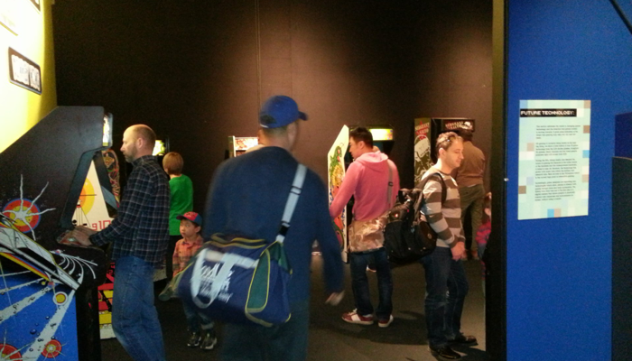

First day of Game ON 2.0
Saturday, March 9, 2013
The Game ON 2.0 exhibition opened today to the public! I was curious:
a) How many people would show up on the first day of March Break?
b) Would it attract a primarily younger crowd or older crowd?
c) What types of games would people be interested in?
d) How would people respond to our part of the exhibition (the game development section)?
e) Was the poutine they served in the cafeteria still amazing?
I definitely saw these questions answered, with a few surprises thrown in!
How many people would show up on the first day of March Break?
March Break is the busiest week of the year for the Ontario Science Centre - it is more of an “all hands on deck” for them during the week to ensure things go smoothly. Mid-week is usually the busiest, especially if it is raining because everything is indoors. Luckily, today was sunny and warm, and I’m sure many families are relaxing today during their first day of March Break. So.....it was busy, but not ultra-crowd-control-busy. This was great, because it allowed us to see how people were interacting with the exhibition, and get a glimpse of what a more “normal” day would be like.
Would it attract a primarily younger crowd or older crowd?
Of course, we saw pretty much everyone. There were small groups of tweens and teens playing the various games together - perhaps they came with their friends alone, or ditched their parent at another part of the exhibition. There were a small number of young adults with small kids and/or strollers. There were many adults that either came alone or ditched their kids earlier to play some cool games (they definitely congregated around the arcade machines). However, by far the largest group were adults that toured the different games with their kids between the ages of about 10 to 16.
What types of games would people be interested in?
This would be hard to sum up in a few sentences, so I’ll use bullets:
-
•The early exhibits (Pong, Computer Space, Space War) weren’t that popular.
-
•The pinball machines and sit down arcade machines (Phoenix & Space Invaders) were hugely popular - I don’t remember seeing any of them unattended during the entire time we were there.
-
•The section that allowed people to play games from early to late game consoles was hugely popular. Visually, this is the busiest part of the exhibition, and the number of people who hung around and played the games definitely echoed this. Younger people would play the early games (e.g. Atari 2600) while laughing at how cheesy the graphics were, while the much older crowd would play them with nostalgic precision.
-
•The tween and teen age groups were extremely interested in the games from the 1990s such as Street Fighter II, as well as the weird/unusual games, such as the Danmaku (shooting hell) games from Japan that you couldn’t get in North America. You couldn’t even close to these games there were so many tweens and teens gathered around them.
-
•The concept art and game poster section wasn’t very popular.
-
•Almost everyone had their picture taken next to the Lara Croft figure.
-
•The driving and music games were somewhat popular, but primarily with the teen and adult crowds.
-
•The multiplayer Halo 3 display was never left unattended by teens and parents (who surprisingly seemed to do better than their kids).
-
•The portable and handheld game console section wasn’t as popular as I expected. Neither was the young kid games section.
-
•The arcade games were incredibly popular, and played by all age groups. If someone left an arcade machine, there was another person waiting to take their place. There were some older adults who definitely wanted to see how high of a score they could get on the familiar arcades of their youth. And there were some adults who showed their young kids how to play the games (Pac-man and Vs. Super Mario Bros were hugely popular with the young kids). There was also a large number of tweens, teens and their parents who were playing pretty much everything they could. I was shocked at how many kids and teens knew about the titles - one kid said to his dad “Oh my god - they have Galaga - I love this game!” (picture the tear rolling down my cheek) - stuff like this happened a lot all day long.
How would people respond to our part of the exhibition (the game development section)?
The two sections where kids can make an 8-bit video game character were extremely popular. You can also see Nicholas in the picture below working on a game in Unity3D - occasionally, the teen and adult crowd hung around and watched some of the stuff he was doing, but many were too shy to ask him questions.

Many people read our displays with cool video game facts, and played with our interactive display too. When the March Break craze hits next week, people will likely be cued outside the entrance to the Game ON 2.0 exhibition next to our booth, so we’ll likely have even more people check out this stuff.
Was the poutine they served in the cafeteria still amazing?
Yes, yes it was ;-)
Other stuff I wasn’t expecting.....
While Chris and Felicia manned our game development section, I went through the Game ON 2.0 exhibition to see how people reacted and interacted with different games and displays. What I didn’t expect was the number of people who asked me questions (I was wearing an Ontario Science Centre badge on a lanyard).
This happened almost immediately after I was walking around, and continued throughout the day......luckily I happen to know a lot of information about almost everything in the exhibition and was able to give people some awesome information. In fact, many of the staff crowded around me too to hear what I was saying.
Lots of people didn’t understand the cool Child of Eden game they had in the Kinect section, and I ended up being the person who could tell them about it. It is a difficult game with great graphics, a cool backstory, and a gameplay similar to Rez (also at the exhibition) - it was a huge hit in Japan but because of it’s learning curve, wasn’t as popular in North America.
Similarly, I ended up answering tons of questions and adding lots of information about the arcade games too - e.g. Tron (the most amazing arcade cabinet of all time), Centipede (the first game made by a girl), Gauntlet (the one in the Funspot Arcade in Toronto was the busiest in the world bringing in $3000/week in the 1980s), Galaga (which had a game cheat that a Namco programmer put in so he could get the high score at any arcade), Seargent Salvo (an Atari Battlezone with new stickers so that movie producers didn’t need to pay Atari a royalty when they used it in a film), Nintendo Vs. Super Mario Bros (people can play across from each other, hence the Vs.), Monaco GP (an early racing game that didn’t use a CPU at all), Virtua Fighter (SEGA’s response to Capcom’s Street Fighter II, and cousin to Midway’s Mortal Kombat and Namco’s Tekken fighting games), and much much more. I was glad I could help in this capacity. I also talked a great deal about game development and the game development aspects of some of the games.....and people just loved it!
A few times, people sought me out to help with a stuck ball in the old Atari pinball machine - I gave it my expert nudge and everything was peachy again ;-)
